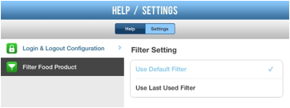

Default Logout:
|
Setting Option |
Description |
|
Never Logout |
Don't automatically log user out of the application |
|
Logout After 5 Minutes of Inactivity |
Automatically log the user out of the application after 5 minutes of inactivity. |
The screen example is like the following:
Filter Food Product:
|
Setting Option |
Description |
|
Use Default Filter |
The application will use the default filters |
|
Use Last Used Filter |
The application will automatically save the last filter you used and apply this next time instead of using the default filters |
The screen example is like the following:
